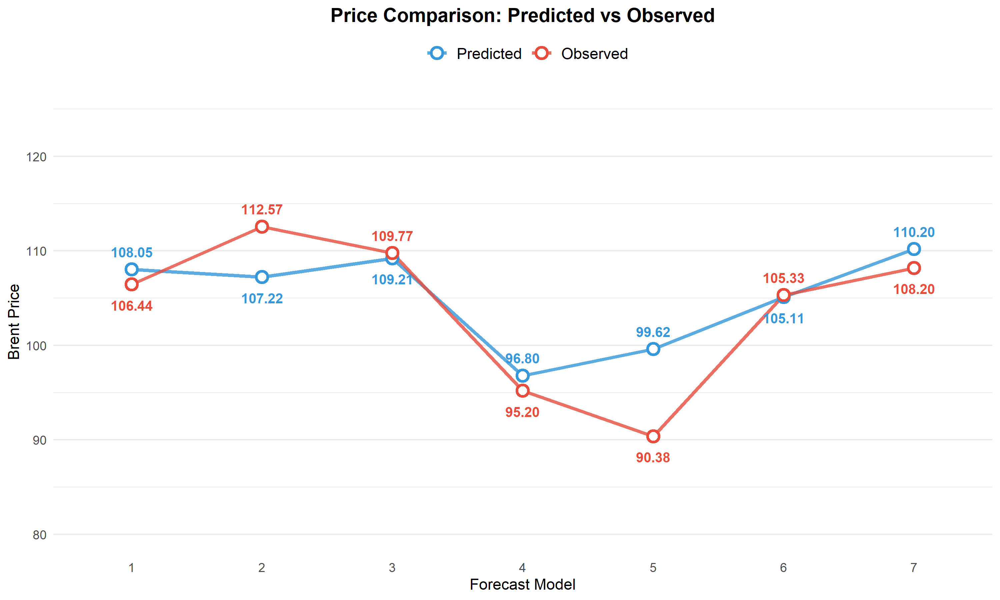
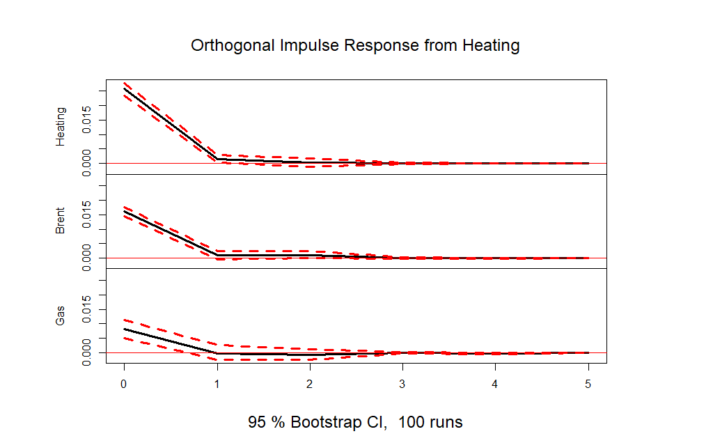
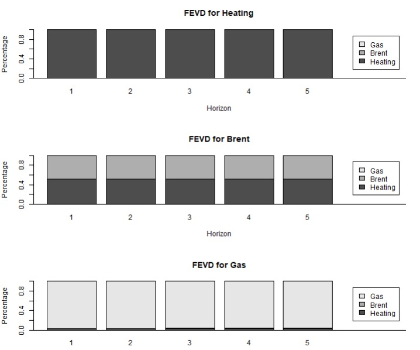

# A Whirlwind Tour of <br><span style="color: var(--accent);">Energy Markets</span> ### Forecasting • Interdependency • Capital Efficiency **Group:** ARMAdilli | **Date:** May 2026 --- ## 1. Introduction & Context <div class="grid-2"> <div> <h3>Market Environment</h3> <p>The 2021-2026 period redefined energy stability. Markets are now in a <b>permanent stress regime</b>.</p> <ul> <li><strong>Geopolitical Shocks:</strong> Ukraine (2022) and Hormuz (2026).</li> <li><strong>Objective:</strong> Shift to <b>Risk Management (VaR)</b>.</li> </ul> </div> <div class="box"> <h4 style="color: var(--accent); margin:0; font-size:0.9em;">Operational Goal</h4> <p>Optimize capital allocation by quantifying extreme loss quantiles.</p> </div> </div> --- ## 2. Literature Review <div class="grid-2"> <div class="stat-card"> <i class="fa-solid fa-chart-line" style="font-size:2em; color:var(--accent);"></i> <h3>Engle (2002)</h3> <p><b>DCC-GARCH:</b> Modeling time-varying correlations during market coupling.</p> </div> <div class="stat-card"> <i class="fa-solid fa-diagram-project" style="font-size:2em; color:var(--accent);"></i> <h3>Diebold & Yilmaz</h3> <p><b>Connectedness:</b> Measuring directional volatility spillovers.</p> </div> </div> --- ## 3. Data Selection <div class="grid-2"> <div> <h3>Brent Crude Dynamics</h3> <p>Primary benchmark showing clear <b>volatility clusters</b> during the 2022 and 2026 shocks.</p> <p>Log returns exhibit <b>heavy tails</b>, making Gaussian assumptions invalid.</p> </div> <div class="img-frame"> <img src="img/plot brent.png" alt="Brent Price and Returns"> </div> </div> --- ## 4. Strategic Rationale <div class="grid-2"> <div class="box"> <h3>Fuel Switching</h3> <p>Natural Gas (Henry Hub) price spikes drive demand toward oil distillates, creating non-linear <b>interdependence</b>.</p> </div> <div class="box"> <h3>Cointegration</h3> <p>Heating Oil (HOIL) as a refined product follows Brent's long-term trend but adds refinery-specific shocks.</p> </div> </div> --- ## 5. Data Treatment <div class="grid-2"> <div class="box" style="border-left: 5px solid var(--orange);"> <h3>The Rollover Challenge</h3> <p>Futures exhibit artificial price jumps at contract expiration.</p> </div> <div> <ul> <li>Algorithmic <b>Roll Day</b> detection.</li> <li>Technical returns set to <b>zero</b>.</li> <li>Ensures GARCH models capture only economic shocks.</li> </ul> </div> </div> --- ## 6. Diagnostic Analysis <div class="grid-2"> <div> <h3>Volatility Clustering</h3> <p>ACF and PACF of <b>squared returns</b> confirm significant ARCH effects.</p> <p><b>Engle ARCH Test:</b> Rejection of homoscedasticity (p < 0.001).</p> </div> <div class="img-frame"> <img src="img/squared returns.png" alt="ACF PACF Squared Returns"> </div> </div> --- ## 7. Forecast Design <div class="grid-2"> <div class="box"> <h3>Forecasting Horizon</h3> <p><b>One-step ahead forecasts</b> (except for the last one) of the Friday closing price of Brent crude oil futures.</p> </div> <div class="box"> <h3>Methodology</h3> <p><b>Rolling window</b> approach.</p> </div> <div class="box"> <h3>Data Splitting</h3> <p>In-sample backtest: <b>80%</b> of the observations in the training sample and <b>20%</b> in the testing sample.</p> </div> <div class="box"> <h3>Parameter Update</h3> <p>Re-estimation of the parameters every <b>10 days</b>.</p> </div> </div> --- ## 8. Forecast Performance Evaluation <div class="content-area"> <p>Performance was assessed on both market direction (<b>DAC</b>) and quantitative error (<b>ME, MAE, RMSE</b>).</p> <div class="grid-2" style="margin: 30px 0;"> <div class="img-frame"> <img src="img/DAC.png" alt="DAC"> </div> <div class="img-frame"> <img src="img/ME_MAE.png" alt="ME_MAE"> </div> </div> <p>One can detect some differences between <b>models 1-4</b>, <b>model 5</b> and <b>models 6-7</b>, due to different model specifications.</p> </div> --- ## Forecast Performance Evaluation <div class="content-area"> <p>This line chart provides immediate visual confirmation of the dynamics previously quantified: it illustrates the <b>point spread</b> between the Brent prices estimated by the models (in <b>blue</b>) and the actual values realized on the market (in <b>red</b>).</p> <div class="img-frame" style="width: 850px; height: 350px; margin: 20px auto;"> <p></p> </div> <p style="font-size: 20px; line-height: 1.3;">To correctly interpret these estimates, one must consider the specific market regime: the <b>conflict in Iran</b> marks a period of extreme geopolitical instability, characterized by sudden <b>volatility spikes</b>, which has made price prediction a particularly complex challenge.</p> </div> --- ## 9. Diebold-Mariano Test <div class="content-area"> <div class="grid-2"> <div class="stat-card"> <i class="fa-solid fa-wave-square" style="font-size:2.5em; color:var(--accent); margin-bottom: 15px;"></i> <h3>Univariate Models</h3> <p>Forecasts 1-4</p> <p style="font-family: monospace; font-size: 1.1em; color: white;">ARMA(1,1)-GARCH(1,1)</p> </div> <div class="stat-card"> <i class="fa-solid fa-diagram-project" style="font-size:2.5em; color:var(--accent); margin-bottom: 15px;"></i> <h3>Multivariate Models</h3> <p>Forecasts 5-7</p> <p style="font-family: monospace; font-size: 1.1em; color: white;">VAR(1)-DCC(1,1)</p> </div> </div> <div class="box" style="margin-top: 40px; border-left: 5px solid var(--accent);"> <p>In both cases we <b>fail to reject the null hypothesis</b> of equal predictive accuracy: any increase in modelling complexity does not translate into a <b>real predictive gain</b>.</p> </div> </div> --- ## 10. Granger Causality Test <div class="content-area"> <p>A robust <b>bidirectional causality</b> is observed between Brent and Heating Oil, while Natural Gas shows no significant causal relationship with the oil complex, confirming its <b>independent price dynamics</b>.</p> <div class="img-frame" style="width: 600px; height: 320px; margin: 15px auto;"> <img src="img/granger_table.png" alt="granger_table"> </div> <div style="display: flex; align-items: center; justify-content: space-between; gap: 20px; margin-top: 10px;"> <div class="stat-card" style="flex: 1; border-color: var(--accent);"> <h3 style="margin: 0; text-align: center;">BRENT CRUDE</h3> <p style="text-align: center; margin: 0; font-size: 0.8em;">Raw Commodity</p> </div> <div style="flex: 1.5; text-align: center;"> <p style="font-size: 0.7em; color: var(--accent); margin-bottom: 5px;"> <i class="fa-solid fa-arrow-left"></i> Demand-pull effect </p> <div style="height: 1px; background: #444; width: 100%; margin: 10px 0;"></div> <p style="font-size: 0.7em; color: var(--orange); margin-top: 5px;"> Classic cost-push mechanism <i class="fa-solid fa-arrow-right"></i> </p> </div> <div class="stat-card" style="flex: 1; border-color: var(--orange);"> <h3 style="margin: 0; text-align: center;">HEATING OIL</h3> <p style="text-align: center; margin: 0; font-size: 0.8em;">Refined Product</p> </div> </div> </div> --- ## 11. IRF and FEVD <div class="content-area"> <p style="text-align: center; color: var(--orange); font-weight: 700; margin-bottom: 0;">Two Cholesky orderings:</p> <div style="display: flex; justify-content: center; align-items: center; gap: 100px; position: relative; margin-bottom: 20px;"> <div style="position: absolute; top: -10px; width: 40%; height: 20px; border-top: 2px solid #333; border-left: 2px solid #333; border-right: 2px solid #333; z-index: 0;"></div> <div class="stat-card" style="padding: 10px 20px; border-color: var(--accent); min-width: 250px;"> <p style="margin: 0; font-family: monospace; text-align: center;">Brent <i class="fa-solid fa-arrow-right"></i> HO <i class="fa-solid fa-arrow-right"></i> Gas</p> </div> <div class="stat-card" style="padding: 10px 20px; border-color: var(--accent); min-width: 250px;"> <p style="margin: 0; font-family: monospace; text-align: center;">HO <i class="fa-solid fa-arrow-right"></i> Brent <i class="fa-solid fa-arrow-right"></i> Gas</p> </div> </div> <div class="grid-2" style="gap: 20px;"> <div style="display: grid; grid-template-columns: 1fr 1fr; gap: 10px;"> <div class="img-frame" style="height: 140px;"><img src="img/irf_brent.png" alt="irf_brent"></div> <div class="img-frame" style="height: 140px;"><p></p></div> </div> <div style="display: grid; grid-template-columns: 1fr 1fr; gap: 10px;"> <div class="img-frame" style="height: 140px;"><img src="img/fevd_brent.png" alt="fevd_brent"></div> <div class="img-frame" style="height: 140px;"><p></p></div> </div> </div> <div class="box" style="margin-top: 20px; padding: 15px; border-top: 3px solid var(--orange);"> <p style="font-size: 0.65em; line-height: 1.3; margin: 0;"> The Brent-Heating Oil relationship reveals <b>instantaneous, bidirectional shock transmission</b> at lag 0 under both orderings. All significant responses dissipate within 1-2 lags. <b>Natural Gas</b> exhibits statistically insignificant impulse responses, providing empirical confirmation of <b>structural price decoupling</b>. The FEVD corroborates these findings. </p> </div> </div> --- ## 12. Correlation of Returns <div class="content-area"> <p style="font-size: 0.72em; line-height: 1.3; margin-bottom: 10px;"> The <b>Brent-Heating Oil correlation</b> remains persistently elevated throughout the sample, consistent with <b>Crack Spread theory</b>. This high correlation experienced a major structural break in 2022 due to the Russian invasion of Ukraine. This geopolitical event triggered a massive <b>short squeeze</b> that caused a large Crack Spread widening. Despite this temporary period of price disconnection, the correlation quickly returned to its historical average, reaffirming the fundamental link between crude oil and refined products. </p> <div class="img-frame" style="width: 750px; height: 280px; margin: 10px auto; background: #000;"> <img src="img/dynamic_correlation.png" alt="dynamic_correlation"> </div> <div class="box" style="padding: 15px; border-left: 5px solid var(--accent);"> <p style="font-size: 0.72em; line-height: 1.3; margin: 0;"> The correlation between <b>Natural Gas</b>, Brent, and Heating Oil remained near zero for most of the period, confirming the historical decoupling of these markets. However, starting in 2025, correlations surged due to the massive expansion of <b>U.S. LNG export capacity</b> and the 2026 closure of the <b>Strait of Hormuz</b>. Paradoxically, while global prices spiked, U.S. Henry Hub prices fell due to export bottlenecks, suggesting the increased correlation stems from <b>shared global information</b> rather than actual synchronized price movement. </p> </div> </div>